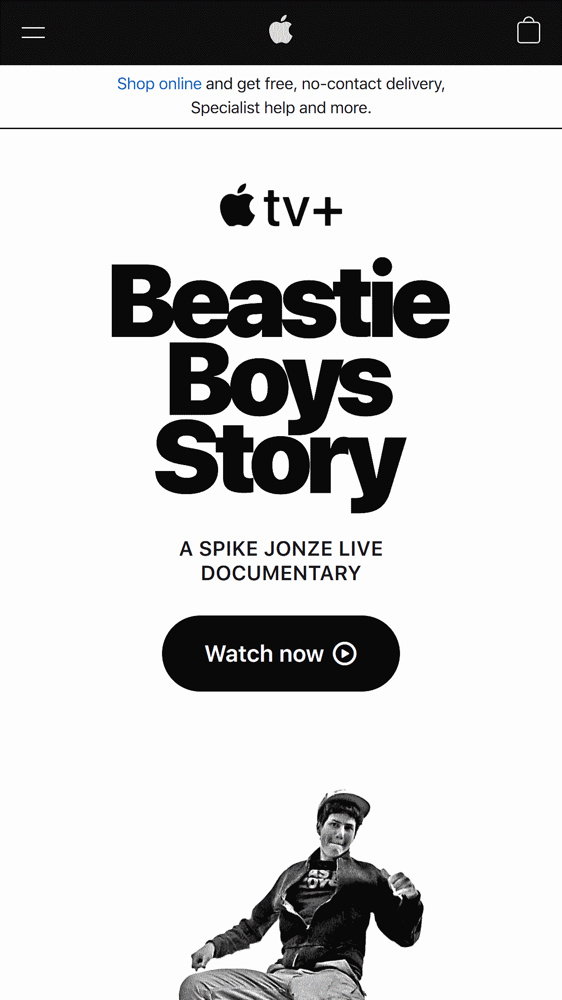

Contrast
Apple
There's a high contrast in this site thanks to the use of white and black color as main palette colors. That's something noticeable in the entire page. Also, they used gray for highlighting less importan but relevant information (like prices). And, at the bottom of the page, the use blue for contrasting "very importan information" about the COVID-19.
Visual Hierarchy
Huffpost

This is a news wbesite. For that reason uses text a lot, it is text-heavy in its use of Hierarchy, though makes a clever use de images. The first element the user sees when getting into the site is a big and bold daily title, with a picture, immediately followed by less important news in lesser font-sizes. After that, the following elements in the hierarchy are the header, with a presumably access to a navigation side bar and a user log in screen.
Hick's Law
ASOS

The site is deadly simple. The entire mobile home page's site enters in the screen. The first time visitor user has very few options to choose. The user knows right away that he can shop for women of men (presumably the user is going to shop some clothing). There's visible additional opcion, like searching, favoriting and a basekt, also, a side bar allows the user to get into more complex options. The time it takes the user to get into the site is very little.